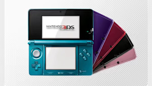
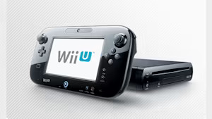

1889
Fusajiro Yamauchi began a small business manufacturing “Hanafuda” playing cards in Kyoto, Japan.
1980
Announced a wholly owned subsidiary, Nintendo of America Inc. (NOA). Started selling the Game & Watch™ product line.
1981
Developed and began distribution of the coin-operated video game Donkey Kong™.
1985
The Nintendo Entertainment System™ (NES™) launched in America and became a smash hit.
1985
Mario™ was first introduced in the Super Mario Bros.™ game.
1986
The character Link™ made his first appearance in the Legend of Zelda™.
1989
Introduced Game Boy™, the first portable handheld game system. Originally bundled with the Tetris™ game, it was an instant phenomenon.
1991
The 16-bit Super Nintendo Entertainment System™ (Super NES™) was released in the US.
1996
The Nintendo 64™ system launched in the U.S. on Sept. 29, along with the critically acclaimed Super Mario 64™ game.
1998
Nintendo introduced Game Boy Color™. Pokémon™, a breakthrough game concept for Game Boy.
2001
Launched the Game Boy™ Advance and the Nintendo GameCube™ systems.
2004
Launched the Nintendo DS™, an innovative, dual-screen handheld gaming system.
2006
Nintendo introduced the Wii™ system and with it several advanced features.
2008
Wii became the first system purchased by more than 10 million Americans in a single year.

2011
The Nintendo 3DS™ system launched, letting users view and play 3D content without special 3D glasses.

2012
The Wii U™ system launched with the innovative Wii U GamePad controller that offered users new ways to play together, including off-TV.
2015
The Splatoon™ game launched, introducing the squid-kids known as Inklings..
2017
The Nintendo Switch™ system launched, along with hits including Super Mario Odyssey™ and The Legend of Zelda™: Breath of the Wild.